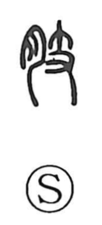

肢

Kun: | On: shi
limb ・ extremity
Explanation
A phono-semantic character built on 支 as its sound and conceptual core. The ancient form of 支 shows a hand (又) grasping a small branch, originally meaning a tree branch and, by extension, anything that splits off from a main body. By adding the flesh element 月 (nikuzuki), the sense turns to the body’s own “branches”: arms and legs. Thus 肢 names the limbs, as in expressions like 肢体動かさず, evoking a state where the body’s limbs do not move and one fails to set oneself to work.